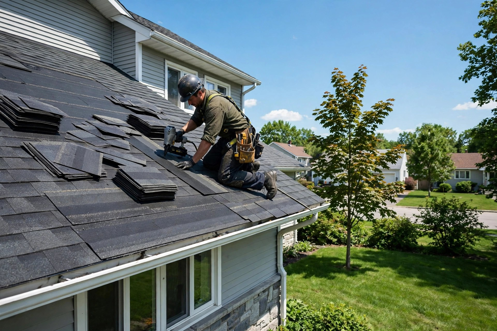
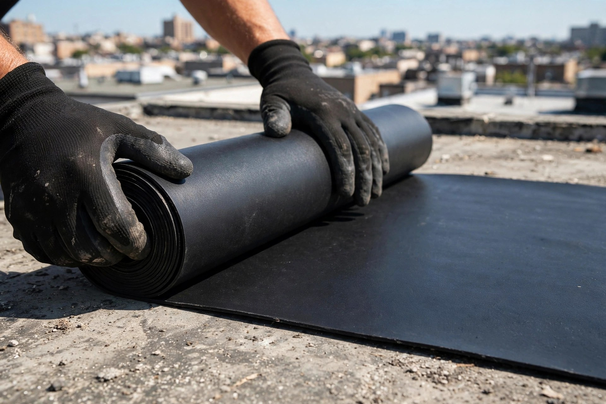
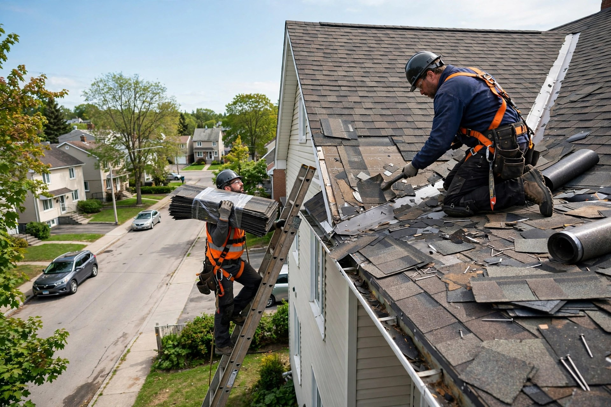
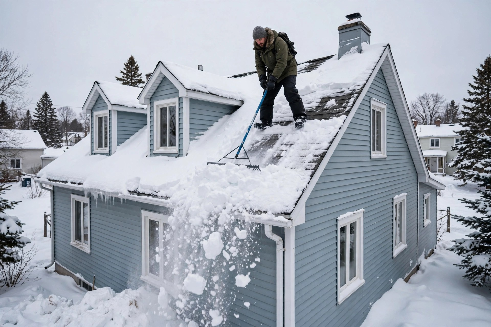

Bardeau d'asphalte
Pose et remplacement de bardeau d'asphalte sur les toitures en pente résidentielles.

Laval, Québec · Couvreur local
Couvreur à Laval : bardeau d'asphalte, membrane élastomère, toit plat, réparation de fuites et déneigement — du travail bien fait, expliqué clairement.
Ce que nous faisons
Pose et remplacement de bardeau d'asphalte sur les toitures en pente résidentielles.
Installation et réparation de membrane élastomère pour les toits plats et commerciaux.
Entretien et réfection de toits plats — étanchéité durable contre la pluie et la neige.
On trouve la source de l'infiltration d'eau et on la répare avant qu'elle cause plus de dégâts.
Déneigement sécuritaire des toitures l'hiver pour prévenir les accumulations dangereuses.
On évalue votre toiture et on vous donne un prix clair, sans frais et sans obligation.

Pourquoi nous choisir
On croit aux choses simples : un travail soigné, un prix expliqué d'avance et des matériaux posés selon les règles de l'art. Vous savez exactement ce qui sera fait — et combien ça coûte.
Sur les toits


Bon à savoir
Oui — on évalue votre toiture et on vous donne un prix clair, sans frais et sans obligation.
Oui — on repère la source de l'infiltration d'eau et on la répare avant qu'elle cause plus de dégâts.
Oui — on déneige les toitures résidentielles l'hiver, de façon sécuritaire.
Lundi au vendredi de 8 h à 18 h, samedi de 9 h à 17 h. Fermé le dimanche.
Venez nous voir